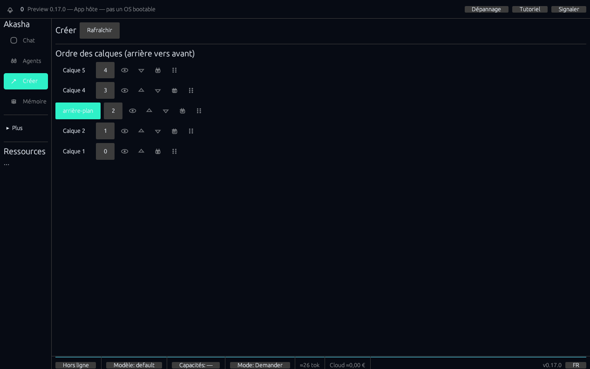
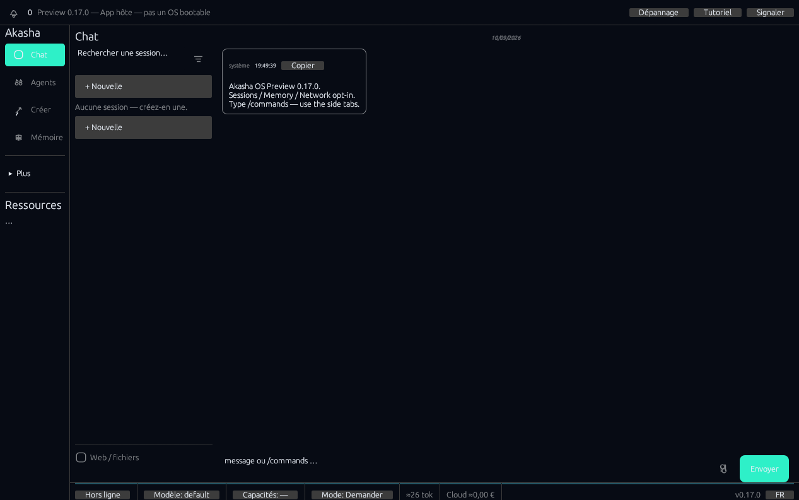

Akasha OS
Agents, models, and tools as system services — not another chat wrapper.
Agents, modèles et outils comme services système — pas un chat de plus.
Preview is a local host app for Windows, Linux, and Mac (Apple Silicon). Capabilities, audit, and offline-by-default are the product — not fine print.
La Preview est une appli hôte locale pour Windows, Linux et Mac (Apple Silicon). Capacités, audit et hors-ligne par défaut sont le produit — pas des notes de bas de page.
Host app — not a bootable OS. NVIDIA recommended; CPU path ships in the same package.
Appli hôte — pas un OS bootable. NVIDIA recommandé ; le chemin CPU est dans le même paquet.

What you open Ce que vous ouvrez
The same rail you meet in Preview: Chat, Create, Memory, and Caps — each a first-class surface, not a plugin bolted on later.
Le même rail que dans la Preview : Chat, Create, Memory et Caps — chacune une surface de premier plan, pas un plugin ajouté après coup.
- Chat Multi-session, local models, offline by default. Multi-sessions, modèles locaux, hors ligne par défaut.
- Create Image and video packs with catalogue recipes and job progress. Packs image et vidéo avec recettes catalogue et progression de job.
- Memory Decision journal and long-term remember / recall. Journal de décisions et mémoire long terme remember / recall.
- Caps Revocable capability tokens — agents stay bounded. Jetons de capacité révocables — les agents restent bornés.

Create
Pick a pack and Preview applies the catalogue recipe — size, frames, flow-shift, offload. Incomplete downloads show as incomplete; generation refuses missing annexes with a clear list. Leave and come back: job progress stays on the Create panel.
Choisissez un pack : la Preview applique la recette catalogue — taille, frames, flow-shift, offload. Un téléchargement incomplet s’affiche comme incomplet ; la génération refuse les annexes manquantes avec une liste claire. Partez et revenez : la progression du job reste sur le panneau Create.
Bounded autonomy Autonomie bornée
Network egress is deny-by-default. Agents run under revocable caps with an audit trail. Local GGUF inference and placement are runtime concerns — not a cloud dependency you hope stays up.
La sortie réseau est refusée par défaut. Les agents tournent sous des caps révocables avec piste d’audit. L’inférence GGUF locale et le placement sont des préoccupations runtime — pas une dépendance cloud à espérer disponible.
Fifteen minutes Quinze minutes
- Install Preview without cloning the repo or using cargo. Installez la Preview sans cloner le dépôt ni utiliser cargo.
- Have one offline chat with a local model. Faites un chat hors ligne avec un modèle local.
- Write one note, then send feedback from the UI. Écrivez une note, puis envoyez un retour depuis l’UI.
Install guide Guide d’installation First run Premier lancement What’s new Nouveautés
Install Preview Installer la Preview
Zip or tarball from GitHub Releases, then the installer script. News, community, and about stay one click away.
Archive depuis GitHub Releases, puis le script d’installation. News, community et about restent à un clic.